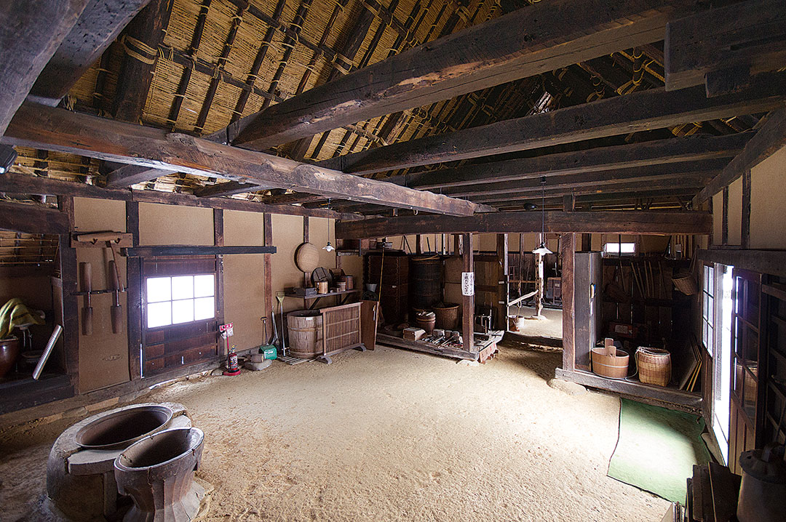
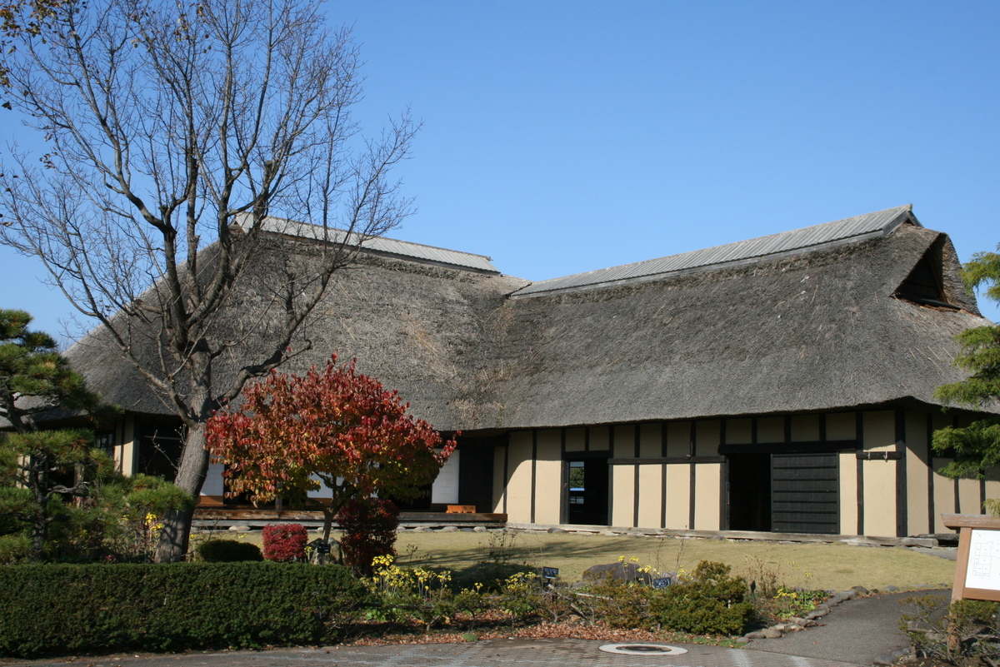

盛岡手づくり村


盛岡手づくり村は、盛岡地域地場産業振興セ
ンター・手づくり工房・南部曲り家の３つの
ゾーンで構成された複合施設です。経験豊富
な職人の技と伝統工芸品、郷土の食やお菓子
の制作風景を見学できる「手づくり工房」ゾ
ーンは、職人自らの手ほどきを受けてものづ
くりができる体験教室も開催されています。
| 所在地 | 岩手県盛岡市繋尾入野64-102 |
|---|---|
| 電話番号 | 019-689-2201 |
| 定休日 | 年末年始 |
| 営業時間 | 8時40分～17時 |
| 料金 | 入場料: 個人 100円 団体(20名以上) 80円 ※手作り体験の料金は別途発生 |
[アクセス経路]
ルート1： 盛岡駅 → 【バス30分】 手づくり村前バス停 → 【徒歩1分】 盛岡手づくり村
ルート2： 盛岡IC → 【車10分】 盛岡手づくり村